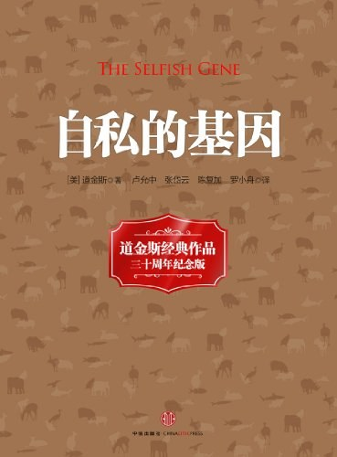

《自私的基因》

总体观点
英国皇家学会会士、演化生物学大师理查德·道金斯于1976年出版的划时代经典，彻底重塑了人类对生命本质的理解。
核心命题：自然选择的真正基本单位不是物种，也不是个体，而是基因。从漫长演化史来看，包括人类在内的所有生命体，本质上都只是基因为了实现自我复制与延续而暂时搭建的“生存机器”。
然而道金斯绝非宿命悲观论者。他在全书最后石破天惊地宣告：人类是地球上唯一拥有反抗自私基因暴政能力的物种——通过文化复制基因“觅母（Meme）”与理性伦理，我们能够建立真正崇高的利他主义与人类文明。
核心观点
-
1. 生物体只是基因制造的临时运载工具与生存机器
血肉之躯终将衰老腐烂消亡，但成功的自私基因可以通过生殖繁衍跨越亿万年时空，成为不朽的数字化遗传信息流。
例 ·太平洋鲑鱼逆流而上数千公里跃过险滩产卵后力竭而死，肉体化为泥土，但其内部携带的DNA指令借由受精卵精确传递给下一代。 -
2. 动物表面的利他行为，背后全是不朽分子的精密自私计算
汉密尔顿法则（rB>C）揭示：当亲属分享相同基因副本的概率足够大时，为挽救多个亲属而牺牲自己符合基因繁衍利益。
例 ·工蜂为了保卫蜂巢蜇刺入侵者导致自身内脏被拉出牺牲，因为工蜂与同胞姐妹共享高达75%的基因，舍身护巢在基因层面上大赚特赚。 -
3. 演化稳定策略（ESS）维持着自然界群体博弈的自发动平衡
没有谁在全盘规划，当种群中绝大多数个体采用某种策略且任何变异策略都无法超越它时，博弈便达到演化稳定平衡。
例 ·羚羊争夺领地与配偶时只用犄角顶撞角力而不下死口角斗，因为生死相搏的感染风险过高，仪式化较量是鹰鸽博弈的稳定解。 -
4. 两性冲突根源于两性在配子上的初始生殖投资不对等
卵子体积庞大且富含营养，精子微小廉价且数量无限；这种初始不对等驱使雄性倾向于广泛播种，雌性倾向于严苛挑选。
例 ·雌鸟在交配前往往要求雄鸟筑造坚固鸟巢并持续喂食数周（考验忠诚），以此提高雄鸟沉没成本，防止其交配后立刻抛妻弃子。 -
5. 代际冲突是父母与子女基因关注度差异的必然博弈产物
父母希望将资源平均分配给所有子女以最大化总繁衍率，但每一个子女对自身的关注度（100%）天然高于对兄弟姐妹（50%）。
例 ·雏鸟在巢中拼命张大嘴大声尖叫争抢母鸟嘴里的虫子，甚至不惜将同胞兄弟挤出鸟巢跌落，残忍却最大化了自身基因存活率。 -
6. 在重复囚徒困境博弈中，“以牙还牙”的善良策略终将胜出
阿克塞尔罗德竞赛证明：不先背叛、受到背叛必坚决惩罚、对方认错立刻宽恕的策略，能战胜所有阴险算计，实现互利共生。
例 ·吸血蝙蝠在夜间将富余血液反刍喂给没捕到猎物的同胞，若某只蝙蝠日后拒绝回馈，它将永久被群体孤立任其饿死（互惠利他）。 -
7. 人类文化的演化传播由全新的复制基因“觅母（Meme）”主导
旋律、思想、流行语、宗教信条像病毒一样通过人际模仿在大脑间复制传播与变异筛选，塑造了人类的精神文明大厦。
例 ·一句洗脑的网络流行梗在一周之内席卷全球社交网络，被数千万人模仿使用，这就是一个具备极高保真度与传播力的超级觅母。 -
8. 唯有人类拥有理性反抗基因制造的利己本能与自私暴政的能力
基因赋予了我们贪婪、求生与繁殖的演化算法惯性，但理性思考、避孕节育、器官捐献与普世福利使我们摆脱了纯粹傀儡命运。
例 ·现代男女主动使用避孕套享受亲密关系而不生育，以及跨越血缘向非洲饥荒灾民捐款，都是对基因底层生殖繁衍指令的伟大叛逆。
全书结构
-
第一至四章：复制基因与基因机器（生命的起源、双螺旋与生存机器）
从原始汤中的自复制分子讲起，论述自然选择的基本单位是基因，生物个体只是基因用来繁衍复制的临时“生存机器”。
例 ·鲑鱼不惜耗尽毕生能量逆流而上产卵力竭而亡，肉身化为泥土，但其内部携带着的遗传信息流通过受精卵跨越时空代代相传。 -
第五至六章：进犯行为与基因道德（演化稳定策略ESS与亲属选择）
引入博弈论演化稳定策略（ESS），用汉密尔顿法则数学公式揭示动物领地争端、仪式化决斗与家族利他行为的基因自私逻辑。
例 ·工蜂在保卫蜂巢时蜇击入侵者导致自身内脏被拉出牺牲，因为工蜂与同胞姐妹共享75%的高亲缘基因，舍己救群完全符合基因利益算计。 -
第七至九章：生殖权力与代际两性博弈（计划生育、代际争斗与两性战争）
分析种群根据资源调节产卵量的基因逻辑，解剖亲代与子代的资源索取冲突，以及精子与卵子初始投资不对等引发的两性博弈。
例 ·雏鸟在巢中拼命张嘴尖叫争抢母鸟喂食甚至推挤同伴，因为每只雏鸟对自身基因的偏好（100%）天然高于对同胞兄弟姐妹（50%）。 -
第十、十二章：互惠利他与好人终有好报（合作的演化与一报还一报）
论证自私的个体如何在重复囚徒困境中演化出合作共赢，阿克塞尔罗德计算机竞赛证明“以牙还牙”策略是最高收益的稳定解。
例 ·吸血蝙蝠在夜间回巢后会将富余血液反刍喂给没捕到猎物的同伴，但若某只蝙蝠日后拒绝反刍分享，全群体将永久终止对其救助。 -
第十一、十三章：觅母崛起与反抗基因暴政（文化复制因子与延伸的表现型）
首创“觅母（Meme）”概念开辟文化演化论，并在结尾发出时代强音：唯有人类拥有理性意识，能够反抗基因自私的暴政。
例 ·人类广泛使用避孕工具享受亲密关系而不生育，以及建立跨种族慈善组织捐献器官，展现了人类文化意识对基因底层生殖算法的崇高反叛。